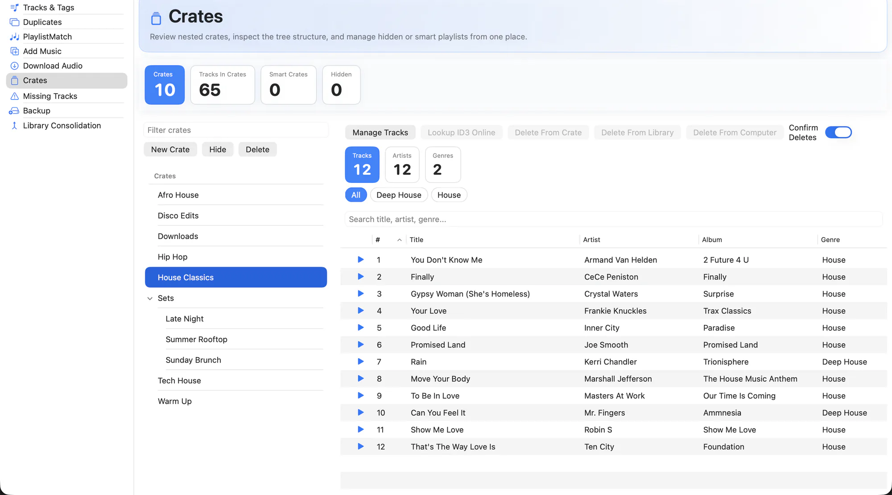

The Crates workspace reads your crate structure straight off disk — nested crates, smart crates and the crates Serato keeps out of sight — and shows them as one tree.
It is also where crates get filled. The list starts with All Tracks and Not In Crates, so the rest of your library is right beside the tree and a track can be dragged onto a crate without leaving the view.
And it is the scope selector for the rest of the app. Pick a crate here and tag editing, duplicate detection and backup can all be pointed at just that crate.

What it does
- The full tree. Nested crates are rebuilt from Serato's naming scheme, so you see the hierarchy you actually built.
- Smart crates too. Rule-based crates are read alongside regular ones, and their rules are preserved whenever EZLibrary rewrites a path inside them.
- Hidden crates. Crates Serato hides are still shown, because they still hold tracks and still break.
- Browse the whole library here. All Tracks sits at the top of the crate list and lists everything, with the same search and sorting as Tracks & Tags — and the tree stays visible next to it, so filling a crate is a drag.
- Find what you never filed. Not In Crates shows every track that isn't in a single crate — the ones easy to forget and never play. It's a live count at the top of the section too, next to Tracks In Crates.
- File from the right-click menu. Secondary-click a track for Add … to Crate and, when a crate is open, Remove … from it. Acts on the whole selection, or on just the row you pointed at, the way Finder does.
- No accidental doubles. Adding a track a crate already lists does nothing, rather than filing it twice — Serato reads a repeated path as a second copy of the track.
- Fast filtering. Filter within a crate and sort by any column to find what you are after.
- Crate-scoped operations. Use a crate as the scope for bulk tag edits, duplicate scans and single-crate backups.
- Resize or collapse the tree. Drag the crate panel wider or narrower to hand more room to the track columns, or collapse it to a slim icon strip with one click — the width and collapsed state are remembered between launches.
- Safe deletes. Deleting a crate moves it to the Trash rather than destroying it.
How to use it
-
Open Crates
The tree loads from your
_Serato_folder — no import step. -
Select a crate
Its tracks appear on the right, with the same table and player as the main library view.
-
Or start from All Tracks
Pick All Tracks or Not In Crates at the top of the list, search for what you want, and drag the rows onto a crate in the tree.
-
Use it as a scope
Switch to Tracks & Tags, Duplicates or Backup and the crate stays selected as the scope.
Smart crates are left out of the filing tools. Their membership comes from rules that Serato re-evaluates, so a hand-added track would be discarded on the next pass — and for the same reason a track that only appears in a smart crate still counts as Not In Crates.
Related
Try it on your own library
Free and open source. Takes a backup before it touches anything.